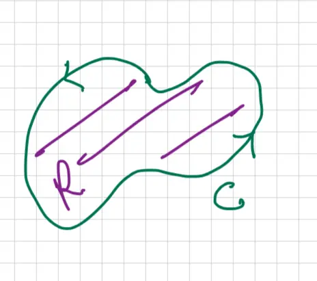

Lesson 30: Curl and Divergence (17.5)
Review: Computing \(\int_C \vec{F} \cdot d\vec{r} = \int_C \vec{F} \cdot \vec{T} \, ds = \int_C f \, dx + g \, dy\)
The method to compute the line integral depends on a primary question: Is \(C\) a Simple Closed Curve in 2D?
Case: Yes
If the curve \(C\) is a simple closed curve, we apply Green's Theorem to relate the line integral to a double integral over the region \(R\) enclosed by \(C\).

Tangential form of Green's Theorem:
\[ \oint_C \vec{F} \cdot \vec{T} \, ds = \iint_R (g_x - f_y) \, dA \]The integrand \((g_x - f_y)\) is known as the Scalar Curl.
Normal form of Green's Theorem:
\[ \oint_C \vec{F} \cdot \vec{N} \, ds = \oint_C g \, dx - f \, dy = \iint_R (f_x + g_y) \, dA \]The integrand \((f_x + g_y)\) is known as div \(\vec{F}\) (Divergence of \(\vec{F}\)).
Case: No
If the curve \(C\) is not a simple closed curve, the next question is: Is the vector field \(\vec{F}\) conservative? (i.e., does there exist a potential function \(\phi\) such that \(\vec{F} = \nabla \phi\)?)
- If Yes: Apply FTCLI (Fundamental Theorem of Calculus for Line Integrals) \[ \int_C \nabla \phi \cdot d\vec{r} = \phi(\text{end}) - \phi(\text{start}) \]
- If No: Use the Definition of a line integral \[ \int_C \vec{F} \cdot d\vec{r} = \int_a^b \vec{F}(\vec{r}(t)) \cdot \vec{r}'(t) \, dt \]
![A vector field plot on a 2D Cartesian coordinate system representing \(\vec{F} = \langle -y, x, 0 \rangle\). The diagram shows blue arrows indicating the direction and magnitude of the field: in the upper-left quadrant, arrows point left; in the lower-left, they point down; in the lower-right, they point right; and in the upper-right, they point up, overall creating a counter-clockwise circulation around the origin. A red rectangular object, labeled as a 'Log', is placed diagonally across the origin with internal hatching. Below the plot, the text notes 'Log Rotates' and 'Does not Drift', signifying that the vector field causes rotation but has no net diverging or converging flow at the center.](img/lesson-30-3.webp)
![A vector field plot on a Cartesian coordinate system representing \(\vec{F} = \langle x, y, 0 \rangle\). The diagram features blue arrows radiating outward from the origin in all directions. Specific arrows are drawn along the x and y axes and the diagonal lines \(y=x\) and \(y=-x\). A red rectangle, representing a 'log', is placed diagonally across the origin along the line \(y=x\). The rectangle contains red cross-hatching to indicate its physical extent. The radial nature of the arrows suggests an expanding field with no swirling or circular motion around the origin.](img/lesson-30-4.webp)